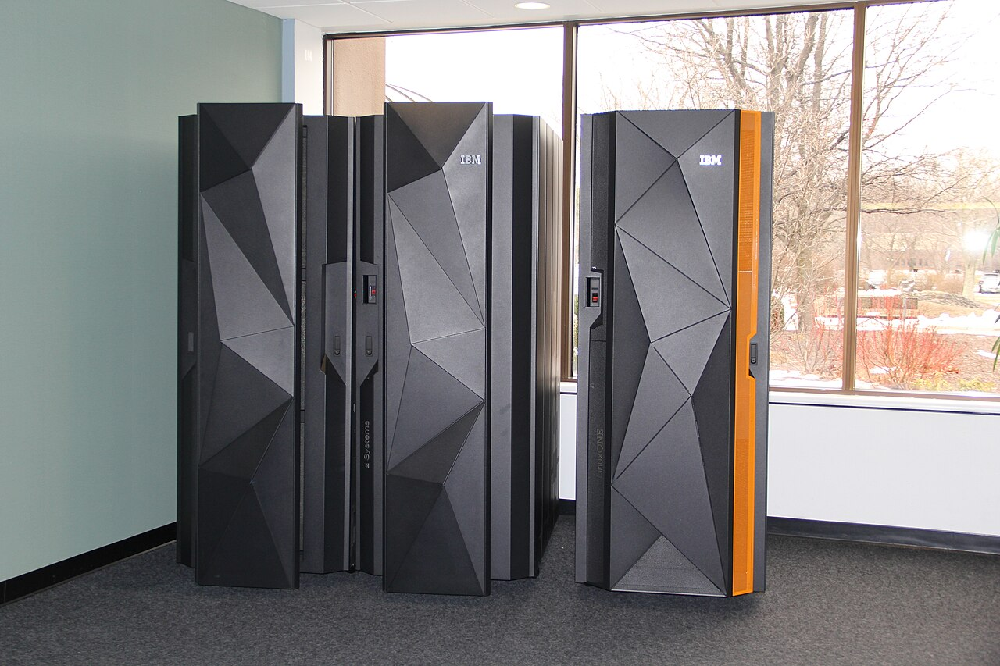

IBM revenue rose 4.7% to $17.1 billion in the third quarter; net income rose 25.6%


IBM's revenue rose 4.7% to $17.1 billion in the third quarter of 2026. Net income rose 25.6% to $2.2 billion, far faster than pre-tax income, which rose 2.8%. The gap came from income tax, which was 56.6% lower than a year earlier.
Software led revenue growth
Revenue of $17.1 billion was $772 million higher than in the third quarter of 2025. In the second quarter growth had been 1.1%. Over the first nine months of 2026 revenue rose 4.9% to $50.2 billion.
Software revenue was $7,804 million, up from a year earlier. The 10-Q says this reflected new business, including the Confluent acquisition, and the closing of large deals that had slipped from the second quarter. Infrastructure revenue was $3,707 million, also up from a year earlier. The earnings release puts Consulting revenue at $5.3 billion, flat on a year earlier.
Net income rose much faster than pre-tax income
Gross margin was 56.8%, 0.5 points lower than a year earlier. Research and development spending rose 14.2% to $2.4 billion, or 13.9% of revenue against 12.7%. The 10-Q says the increase was driven by organic and acquired investment in AI, hybrid cloud and quantum.
Pre-tax income was $2.5 billion. Income tax was $298 million, an effective rate of 11.9%, against $686 million and 28.2% in the third quarter of 2025. That is why net income rose 25.6% while pre-tax income rose 2.8%. Net income was 12.8% of revenue, up from 10.7%.
Cash flow rose by almost a third
Cash from operations was $4.0 billion, up 30.6%. Capital spending was $332 million, so free cash flow, which this report defines as cash from operations minus capital spending, rose 30.6% to $3.7 billion. That was 21.6% of revenue.
IBM paid $1.6 billion in dividends in the quarter, up from $1.6 billion, and bought back no shares. Cash and short-term investments were $11.1 billion at September 30, compared with $14.9 billion a year earlier.
The company's own free cash flow measure is lower: its earnings release gives $3.0 billion for the quarter, $0.7 billion more than a year earlier. The company said it continues to expect full-year constant currency revenue growth of four to five percent, and now expects full-year free cash flow to increase by more than one billion dollars.
Twelve quarters of figures
Operating income, share buybacks and the diluted share count for some quarters are not in the filings' structured data, so they are not shown. Net income includes a small loss from discontinued operations.
Sources: Form 10-Q (SEC EDGAR) · Form 10-Q filing index · EDGAR company facts for IBM · IBM third-quarter 2026 earnings release (Exhibit 99.1). More figures for IBM are on its company page.